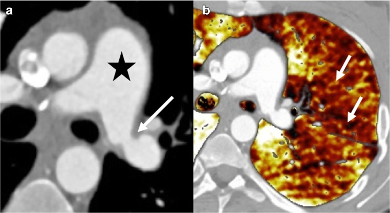

019 — Hẹp miệng nối động mạch phổi sau ghép phổi: 3,66% ca ghép, vận tốc đỉnh 2,6 m/s, giảm tưới máu một bên trên bản đồ iodine / Anastomotic pulmonary artery stenosis after lung transplantation
Tags: pattern:hep-dong-mach-phoi pattern:khong-tuoi-mau pattern:tang-ap-dong-mach-phoi pattern:phi-dai-that-phai vung:phoi vung:dong-mach-phoi vung:trung-that protocol:CTA protocol:TEE protocol:stent-graft
Mức chắc chắn (certainty): tổng hợp y văn (literature synthesis) — ghép tổng quan hình ảnh biến chứng sau ghép phổi (Habre C et al., Insights Imaging 2018, PMC6206387, CC BY 4.0), phân tích gộp 34 bài về tắc/hẹp động mạch phổi sau ghép (PMID 33760790, Transplantation 2021), loạt 354 ca ghép can thiệp nội mạch (PMID 25851200, JVIR 2015), loạt 5 ca stent-graft (PMID 24510277, Cardiovasc Intervent Radiol 2014), ca nong bóng áp lực cao (PMC7326661, J Cardiol Cases 2020), ca nong bóng rồi đặt stent (PMID 19289997, Ann Transplant 2009) và nghiên cứu TEE trong mổ (PMID 9149574, Anesthesiology 1997). Số nào nguồn không nêu ghi "chưa rõ", không bịa.
Câu chốt: hẹp miệng nối động mạch phổi là biến chứng hiếm nhưng chết người của ghép phổi — điểm hiện mắc 3,66% qua 34 nghiên cứu, 76% phải can thiệp lại khẩn, 23% tử vong trong viện ở nhóm được chẩn đoán (14/62). Dấu hiệu chốt trên CT là chênh đường kính ngay tại đường khâu + giảm tưới máu cả một bên phổi trên bản đồ iodine, kèm giãn thân động mạch phổi và các buồng tim phải. Điều trị: nong bóng trước, stent-graft khi hẹp đàn hồi/tái hẹp, mổ khi thất bại — tỷ lệ thành công kỹ thuật 100%, hết triệu chứng 92%, hẹp trong stent 9%.
1. Tổng quan bệnh học – cơ chế hình ảnh
1.1 Vì sao miệng nối bị hẹp (TẠI SAO)
- Đây là chỗ nối hai mạch khác cỡ. Động mạch phổi (PA) của người cho và người nhận thường lệch đường kính; khâu vòng liên tục để "khớp" hai cỡ mạch tạo ra nếp gấp niêm mạc và hẹp ngay tại đường khâu. Tổng quan CT ghi rõ dấu hiệu chốt là "significant difference of the pulmonary arterial diameter between donor and receiver" (PMC6206387).
- Bốn cơ chế chồng lấp:
- Lệch cỡ (size mismatch) + kỹ thuật khâu → hẹp cơ học sớm;
- Huyết khối tại miệng nối (dòng chảy rối, mô phơi, tăng đông sau mổ);
- Phù miệng nối trong 0–2 tuần đầu (bảng thời điểm của PMC6206387 xếp hẹp PA vào 0–2 tuần);
- Tăng sinh nội mạc (intimal hyperplasia) + xơ hóa về sau — hẹp tiến triển hàng tuần đến hàng tháng (loạt stent chẩn đoán trung vị ngày 44, khoảng 22–84; loạt JVIR can thiệp trung bình 6,7 tháng sau ghép).
- Vì sao hẹp nhỏ lại gây hậu quả lớn — vật lý Poiseuille: sức cản mạch tỷ lệ nghịch với bán kính lũy thừa 4 (R ∝ 1/r⁴). Giảm 50% đường kính (bán kính còn 1/2) làm sức cản tăng ~16 lần. Vì vậy một hẹp "chỉ 50%" tại miệng nối đủ làm tăng áp lực động mạch phổi, giảm tưới máu phổi ghép và suy thất phải.
- Vì sao giảm tưới máu lại thấy được trên CT: bản đồ iodine của CT hai năng lượng (dual-energy) phân tách iodine theo hệ số suy giảm ở hai mức năng lượng; vùng phổi nhận ít máu có nồng độ iodine thấp → hiện màu nhạt hơn hẳn so với bên đối diện. Ảnh đơn năng lượng thấp 40–50 keV cũng làm nổi iodine, giúp thấy chênh lệch tưới máu rõ hơn.
- Vì sao bệnh nhân khó thở chứ không chỉ "thiếu máu một bên": phổi ghép bị mất tuần hoàn phế quản và mất bạch mạch, nên khả năng bù trừ kém; hẹp PA → V/Q mismatch + tăng áp phổi → khó thở khi gắng sức, đau ngực kiểu màng phổi, giảm oxy máu; nếu là ghép một bên, máu dồn sang phổi bản địa và phổi ghép càng thiếu tưới máu.
1.2 Ngưỡng định lượng nằm lòng
| Đại lượng | Ngưỡng / con số | Ý nghĩa | Nguồn |
|---|---|---|---|
| Điểm hiện mắc hẹp/tắc PA sau ghép | 3,66% (34 bài) | Không hiếm như tên gọi "biến chứng hiếm" | PMID 33760790 |
| Vận tốc đỉnh qua chỗ hẹp (siêu âm tim) | 2,60 ± 0,58 m/s | Gợi ý hẹp có ý nghĩa | PMID 33760790 |
| Đường kính PA bị hẹp dự báo kết cục xấu | 0,78 ± 0,40 cm | Càng nhỏ càng nặng | PMID 33760790 |
| Can thiệp lại khẩn | 76% (47/62) | Phần lớn không chờ được | PMID 33760790 |
| Tử vong trong viện ở ca được chẩn đoán | 23% (14/62) | Chẩn đoán muộn = mất phổi/mất bệnh nhân | PMID 33760790 |
| Hẹp PA có ý nghĩa trong loạt 354 ca ghép | 12/19 ca chụp mạch vì suy hô hấp (≈ 3,4% của 354 ca ghép) | Xác suất thực hành | PMID 25851200 |
| Thành công kỹ thuật stent | 100%; hết triệu chứng 92%; hẹp trong stent 9% | Stent là lựa chọn bền | PMID 25851200 |
| Stent-graft: chẩn đoán muộn | trung vị 44 ngày (22–84) | Hẹp có thể xuất hiện sau khi ra viện | PMID 24510277 |
| Tưới máu phổi ghép sau can thiệp | +26% (IQR 13–37) | Đo bằng xạ hình định lượng | PMID 24510277 |
| SpO₂ sau can thiệp | +8% (IQR 4–9) | Cải thiện oxy máu | PMID 24510277 |
| Nong bóng áp lực cao ở ghép một bên | Tưới máu 7% → 58% tổng lưu lượng | Nong bóng đơn thuần có thể đủ | PMC7326661 |
| Đường kính miệng nối PA phải bình thường trên TEE | 1,0–1,7 cm (trung bình 1,26 ± 0,24 cm) | Mốc so sánh | PMID 9149574 |
2. Mẫu hình + chẩn đoán phân biệt theo vị trí và thời điểm (gamut)
Câu hỏi thực hành: bệnh nhân ghép phổi khó thở/giảm oxy máu — tổn thương ở động mạch phổi, tĩnh mạch phổi, đường thở, nhu mô hay do thải ghép/nhiễm?
- Theo thời điểm (bảng của PMC6206387):
- 0–2 tuần: phù/tổn thương miệng nối PA, hẹp PA sớm, huyết khối PA, rối loạn chức năng mảnh ghép nguyên phát (PGD), lệch cỡ phổi–lồng ngực, bục miệng nối phế quản.
- 2 tuần – 6 tháng: thải ghép cấp, nhiễm khuẩn/virus/nấm, hẹp phế quản, hẹp tĩnh mạch phổi, hẹp PA muộn do tăng sinh nội mạc.
- > 6 tháng: CLAD (BOS/RAS/AFOP), nhiễm muộn, PTLD.
- Theo cơ chế mạch:
- Hẹp PA tại miệng nối: chênh đường kính tại đường khâu, giảm tưới máu cả bên phổi ghép, giãn thân PA/thất phải.
- Hẹp tĩnh mạch phổi (bài 099): hẹp tại lỗ đổ về nhĩ trái → phù thùy, dày vách liên tiểu thùy, tràn dịch tái phát; có thể kèm hẹp PA cùng bên — đừng dừng khi thấy một tổn thương.
- Huyết khối PA: khuyết thuốc trong lòng mạch, không phải hẹp thành tại đường khâu.
- Thuyên tắc phổi: khuyết thuốc cấp tính, thường nhiều nhánh, bối cảnh tăng đông/giảm vận động.
- PGD: phù phổi hai bên/đám mờ trong 72 giờ đầu, không có hẹp khu trú.
- Hẹp phế quản: khó thở + thở rít một bên, xẹp phổi/thông khí quá mức; CT thấy hẹp đường thở, không phải mạch.
- Lệch cỡ phổi–lồng ngực: xẹp phổi dưới, không hẹp mạch.
- Nhiễm trùng: đông đặc/kính mờ, sốt, dịch phế quản; có thể cùng tồn tại với hẹp PA.
- Thải ghép cấp: kính mờ, dày vách, tràn dịch; chẩn đoán mô học.
Mnemonic "PASS" cho khó thở sau ghép phổi: Perfusion (hẹp PA/tĩnh mạch), Airway (hẹp/bục phế quản), Size (lệch cỡ), Systemic (thải ghép/nhiễm/PGD).
3. Bảng so sánh phân biệt (ma trận đối chiếu)
| Thực thể (entity) | Hình ảnh điển hình | Chốt vào (rule-in) | Chốt loại (rule-out) | Gợi ý xác nhận |
|---|---|---|---|---|
| Hẹp PA tại miệng nối | CTA: chênh đường kính tại đường khâu; giảm tưới máu cả bên trên bản đồ iodine; giãn thân PA/thất phải | Chênh đường kính ngay tại đường khâu + giảm tưới máu một bên | Tổn thương lan tỏa hai bên không tương ứng miệng nối → nghĩ PGD/nhiễm | CTA lát ≤ 1 mm + bản đồ iodine; TEE cho PA phải; chụp mạch + đo chênh áp |
| Hẹp tĩnh mạch phổi (099) | Hẹp tại lỗ đổ nhĩ trái; phù thùy, dày vách liên tiểu thùy, tràn dịch tái phát | Hẹp lỗ đổ + phù thùy cùng bên | Giãn thân PA đơn thuần không có hẹp tĩnh mạch → không phải PVS | CTA thì tĩnh mạch; TEE; chụp tĩnh mạch phổi |
| Huyết khối PA | Khuyết thuốc trong lòng tại/vượt miệng nối | Khuyết thuốc di động trong lòng mạch | Hẹp thành đối xứng tại đường khâu → hẹp miệng nối | CTA đa thì; siêu âm tim; xét nghiệm tăng đông |
| Thuyên tắc phổi | Khuyết thuốc nhiều nhánh, cấp tính | Nhiều khuyết thuốc + bối cảnh tăng đông | Hẹp khu trú đúng miệng nối → hẹp miệng nối | CTA; D-dimer; siêu âm tim |
| PGD | Phù phổi/đám mờ trong 72 giờ, hai bên | Khởi phát < 72 giờ + phù lan tỏa | Hẹp khu trú tại miệng nối → không phải PGD | Chẩn đoán loại trừ; đáp ứng hỗ trợ |
| Hẹp phế quản | Hẹp đường thở tại miệng nối, xẹp phổi/thông khí quá mức | Hẹp đường thở + thở rít một bên | Mạch phổi bình thường tại miệng nối → không phải hẹp PA | Nội soi phế quản; CT lát mỏng |
| Lệch cỡ phổi–lồng ngực | Xẹp phổi dưới, dấu đuôi sao chổi, không hẹp mạch | Phổi nhỏ hơn lồng ngực + xẹp thùy dưới | Hẹp mạch rõ tại đường khâu → không phải lệch cỡ đơn thuần | CT; so sánh thể tích |

Trái (a): CTA ngực — hẹp động mạch phổi trái tại miệng nối (mũi tên trắng), thân động mạch phổi giãn (ngôi sao). Phải (b): bản đồ tưới máu CT hai năng lượng — vùng màu vàng nhạt (mũi tên) là phổi trái giảm tưới máu lan rộng. Nguồn: Habre C et al., Insights Imaging 2018 (PMC6206387), Fig. 5, CC BY 4.0.4. Protocol chụp + phân độ và quyết định can thiệp
4.1 Protocol
- CTA ngực là bước chốt: lát cắt ≤ 1 mm, bơm thuốc cản quang theo bơm theo dõi (bolus tracking) ở động mạch phổi; dựng MPR dọc trục mạch và MIP để đo đường kính tại đúng đường khâu, so với đoạn mạch trước/sau miệng nối và với cỡ mạch người cho.
- CT hai năng lượng (nếu có): dựng bản đồ iodine để thấy giảm tưới máu một bên — đây là dấu hiệu gián tiếp mạnh khi hẹp khó đo (PMC6206387). Ảnh đơn năng lượng 40–50 keV làm nổi iodine.
- Siêu âm tim qua thực quản (TEE): đo vận tốc đỉnh và chênh áp qua miệng nối; bình thường đường kính miệng nối PA phải 1,0–1,7 cm. Cạm bẫy: nghiên cứu 18 ca cho thấy không quan sát được miệng nối PA trái nào (0/9) bằng TEE một mặt phẳng (PMID 9149574) → TEE bình thường không loại trừ hẹp PA trái; phải CTA.
- Xạ hình tưới máu phổi (99mTc): định lượng phần trăm lưu lượng cho từng phổi — dùng theo dõi trước/sau can thiệp (ca PMC7326661: 7% → 58%).
- Chụp mạch phổi (DSA): tiêu chuẩn vàng, đo chênh áp và can thiệp ngay trong cùng buổi.
4.2 Phân độ và ngưỡng can thiệp
- Phân độ theo mức hẹp đường kính (dùng trong thực hành, chưa có hệ phân độ thống nhất cho PA sau ghép): nhẹ < 50%**, vừa **50–70%**, nặng **> 70%; kèm giảm tưới máu một bên và tăng áp phổi.
- Ngưỡng can thiệp thực hành: có triệu chứng + hẹp ≥ 50% hoặc chênh áp đáng kể qua miệng nối; ca minh họa có CTA hẹp 50% và gradient TEE 40 mmHg mới được nong bóng (PMID 19289997). Ca nong bóng áp lực cao được chỉ định khi giảm tưới máu nặng (7% lưu lượng) (PMC7326661).
- Thứ tự can thiệp: nong bóng trước (đặc biệt hẹp sớm do phù) → stent-graft khi hẹp đàn hồi/tái hẹp hoặc hẹp muộn do tăng sinh nội mạc → mổ tạo hình/tái ghép khi nội mạch thất bại.
- Vì sao stent-graft: stent thường có thể bị mô nội mạc mọc qua lưới; stent-graft phủ ngăn tăng sinh nội mạc trong lòng, nhưng không được che nhánh thùy/phân thùy của động mạch phổi và phải chọn cỡ theo đường kính người cho/người nhận (PMID 24510277).
flowchart TD
A[Khó thở hoặc giảm oxy máu sau ghép phổi] --> B[CTA ngực lát 1 mm + bản đồ iodine]
B --> C{Hẹp tại miệng nối PA?}
C -->|Không| D[Xét hẹp tĩnh mạch phổi, hẹp phế quản, PGD, thải ghép, nhiễm]
C -->|Có| E{Giảm tưới máu một bên hoặc tăng áp phổi?}
E -->|Không| F[Theo dõi, chụp lại]
E -->|Có| G[Chụp mạch + đo chênh áp]
G --> H[Nong bóng trước]
H --> I{Còn hẹp hoặc tái hẹp?}
I -->|Không| J[Theo dõi tưới máu và chênh áp]
I -->|Có| K[Stent-graft theo cỡ mạch người cho và người nhận]
K --> L{Thất bại hoặc hẹp lại nhiều lần?}
L -->|Không| J
L -->|Có| M[Mổ tạo hình miệng nối hoặc tái ghép]
5. Biến thể bình thường và cạm bẫy
- Lệch cỡ sinh lý người cho–người nhận: động mạch phổi người cho nhỏ hơn người nhận không đồng nghĩa hẹp bệnh lý. Chỉ gọi hẹp khi có chênh đường kính khu trú tại đường khâu, giảm tưới máu cùng bên hoặc chênh áp. Đo tại 3 điểm (trước, tại, sau miệng nối) và ghi rõ mm.
- TEE bình thường không loại trừ hẹp PA trái: 0/9 miệng nối PA trái quan sát được bằng TEE một mặt phẳng (PMID 9149574). Nếu lâm sàng nghi mà TEE âm → CTA.
- Giảm tưới máu trên bản đồ iodine không đặc hiệu: xẹp phổi, viêm phổi, thuyên tắc phổi, tràn khí cũng gây giảm tưới máu. Luôn đọc cửa sổ nhu mô kèm bản đồ.
- Hẹp sớm do phù có thể hồi phục: trong 0–2 tuần đầu, phù miệng nối làm hẹp; nong bóng hợp lý hơn đặt stent ngay, và cần chụp lại trước khi kết luận thất bại.
- Bỏ sót tổn thương thứ hai: hẹp PA và hẹp tĩnh mạch phổi cùng bên có thể cùng tồn tại (bài 099) — đọc cả hai phía của tuần hoàn phổi.
- Suy hô hấp sau ghép phổi luôn đa yếu tố: PGD, thải ghép, nhiễm, hẹp đường thở có thể chồng lên hẹp mạch; đừng dừng ở một phát hiện ("satisfaction of search").
6. Tự lượng giá — Blind Quiz
Ca 1 — 3 tháng sau ghép một bên phổi trái, khó thở và đau ngực.
- Gợi ý lâm sàng: khó thở tăng dần, đau ngực kiểu màng phổi, SpO₂ thấp hơn trước; không sốt.
- Câu hỏi: Dấu hiệu chính trên (a) và (b)? Ba chẩn đoán phân biệt? Bước tiếp theo?
Bấm để hiện đáp án (findings + chẩn đoán)
- Dấu hiệu: (a) hẹp khu trú động mạch phổi trái tại miệng nối (mũi tên), thân động mạch phổi giãn (ngôi sao); (b) giảm tưới máu lan rộng phổi trái trên bản đồ iodine (vùng vàng nhạt, mũi tên).
- Chẩn đoán: hẹp miệng nối động mạch phổi sau ghép phổi — hẹp làm tăng sức cản (R ∝ 1/r⁴), dồn máu sang phổi bản địa và tăng áp thất phải.
- Bước tiếp theo: chụp mạch phổi đo chênh áp + nong bóng, đặt stent-graft nếu hẹp đàn hồi/tái hẹp; định lượng tưới máu bằng xạ hình trước/sau.
- Nguồn ảnh: Habre C et al., Insights Imaging 2018 (PMC6206387), Fig. 5, CC BY 4.0.
Bài liên quan chéo
- 099 – Hẹp tĩnh mạch phổi sau cô lập tĩnh mạch & sau ghép phổi (phía tĩnh mạch của cùng miệng nối)
- 001 – Tổng quan hệ Ngực
- 096 – Phình động mạch phổi thật & hội chứng Hughes–Stovin
- 098 – Barotrauma & tràn khí màng phổi áp lực ở bệnh nhân thở máy
- 1789 – Viêm phổi do CMV ở người ghép tạng
- 1826 – Viêm phổi do thuốc ức chế mTOR
Không dùng để chẩn đoán độc lập khi chưa có người hướng dẫn.